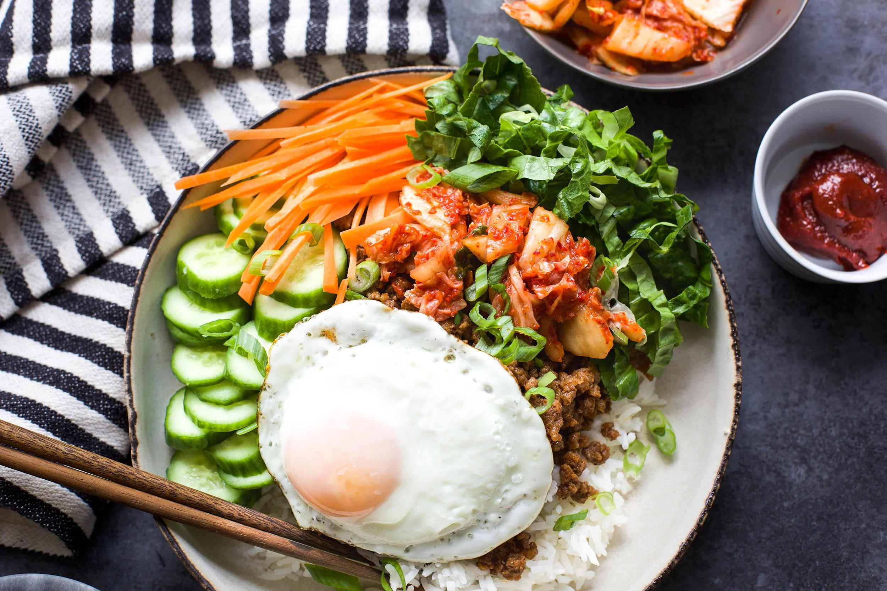
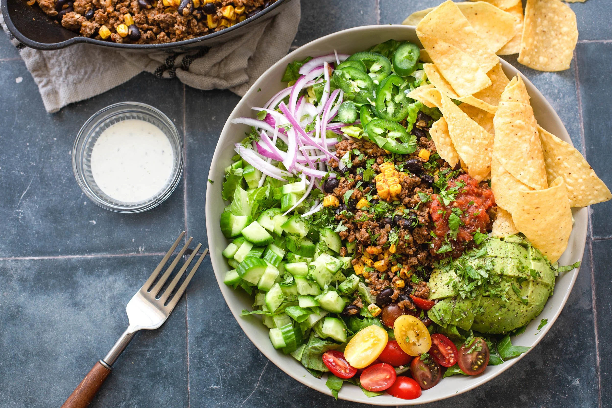

Cooking Time:20 MinutesServing Size4Author:Leigh Ann
Chicken Pesto Pasta
Ingredients
6 Chicken Cutlets (or swap for chicken breast or thighs)
1 Tbsp. Olive Oil
1 Tbsp. Salt
1/2 Tbsp. Black Pepper
2 Tbsp. Diced Sun Dried Tomatoes
1 Lb. Penne Pasta
1/2 Cup Grated Parmesan
For The Pesto
2 Cups Fresh Basil
2 Cloves of Garlic
1/4 Cup Fresh Grated Parmesan Cheese
2 Tbsp. of Pine Nuts
1/4 Cup of Extra Virgin Olive Oil (add more olive Oil if
you need more consistency)
1 Tsp. Salt
1/2 Tsp. Pepper
1/2 Tsp. Lemon Juice
How To Make It
Total Steps: 10
Rub chicken with olive oil, salt, and pepper to season on
all sides.
Preheat a grill or grill pan to medium high heat and cook
chicken on both sides for 3-4 minutes until cutlets are
cooked through. Adjust cook time depending on size of the
chicken cutlets or if swapping for breasts of thighs.
While the chicken is cooking, bring a large pot of water to
a boil on the stove over high heat. Salt liberally after
boiling.
Add pasta and cook until al dente or according to the
package's directions.
While the pasta is boiling , make the pesto by pureeing
basil, garlic, parmesan, pine nuts, lemon juice, salt, and
pepper until smooth in texture. Taste test for seasoning.
When pasta is done cooking, reserve a cup or so of the pasta
water before draining the pasta.
Slice the chicken.
Add hot pasta back to the hot pot and then add in pesto,
parmesan, and sun-dried tomatoes along with half of the
pasta water and stir to combine.
Add more pasta water if needed for consistency.
Add chicken, toss with pasta, and serve with more parmesan
if desired.
Sit Back and Enjoy!
Cooking Time:15 MinutesServing Size2Author:Leigh Ann

Ingredients
1 Lb. Ground Beef
1/4 Cup Soy Sauce
1 Tbsp. Gochujang
1 Tbsp. Grated Ginger
2 Finely Minced Cloves of Garlic
1 Tsp. Sesame Oil
1 Tbsp. Brown Sugar
1 Tbsp. Avocado Oil
1 Tsp. Salt
For The Bowl
Cooked Jasmine Rice
Kimchi
Sliced Cucumbers
Thinly Sliced or Grated Carrots
Thinly Sliced Romaine Lettuce
Green Onions
Fried Eggs (optional but recommended)
How To Make It
Total Steps: 5
Make the sauce by combining soy sauce, gochujang, ginger,
garlic, sesame oil, and brown sugar and stir to combine.
Heat a large skillet over medium heat, add avocado oil, and
ground beef and then season with salt and begin to brown.
Cook for 5-6 minutes and let the beef continue to cook.
When beef is beginning to brown nicely, add in sauce to the
meat and stir to coat and continue cooking until beef
caramelizes and finishes cooking.
To assemble add rice to a bowl, then layer desired amount of
beef on top along with the kimchi, cucumbers, carrots,
lettuce, and green onions. Add fried egg if desired.
Serve immediately.
Serve and Dig In!
Cooking Time:12-15 MinutesServing Size4Author:Leigh Ann
Taco Salad

Ingredients
1 Lb. Ground Beef (can sub turkey or pork)
1 15 oz. Can Black Beans, drained and rinsed
1/4 Cup Finely Diced or Grated Onion
2 Finely Minced Garlic Cloves
2 Tbsp. Chili Powder
1 Tbsp. Paprika
1 Tsp. Cumin
1/2 Tsp. Oregano
1/4 Tsp. Cayenne Pepper (optional)
1 Tsp. Salt
1/2 Tsp. Black Pepper
1/4 Cup Water
1 Tbsp. Avocado Oil
For The Salad
Finely Chopped Romaine Lettuce
Finely Sliced Red Onion
Sliced Grape Tomatoes
Diced Cucumber
Avocado
Cilantro
Thinly Sliced Jalapeños (can use pickled also)
Monterey Jack Cheese (optional)
Salsa
Ranch Dressing (optional)
Tortilla Chips (optional)
How To Make It
Total Steps: 6
Heat a large skillet over medium heat and add oil along with
ground beef and begin to brown.
Add in onion and garlic at this time along with chili
powder, paprika, cumin, oregano, salt, and pepper and stir
to combine and continue to cook the beef until almost cooked
through.
Add in water to the skillet and stir to make a little sauce
out of the spices and then add in black beans and corn.
Continue to cook for another 1-2 minutes until all is
heated through.
While beef is cooking, add lettuce, onion, tomatoes, and
cucumber to a bowl. Add the beef mixture to the salad and
then top with cheese, cilantro, jalapeno, avocado, salsa,
and ranch dressing.
Serve with a few tortilla chips on the side if desired.